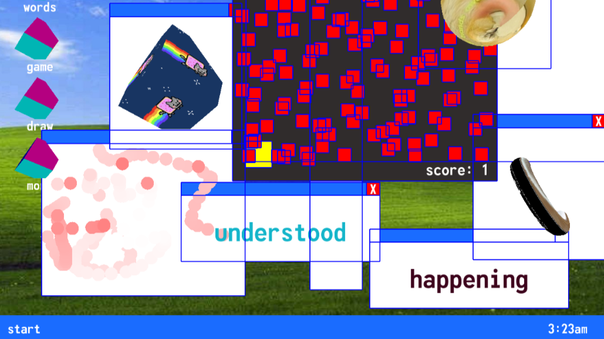
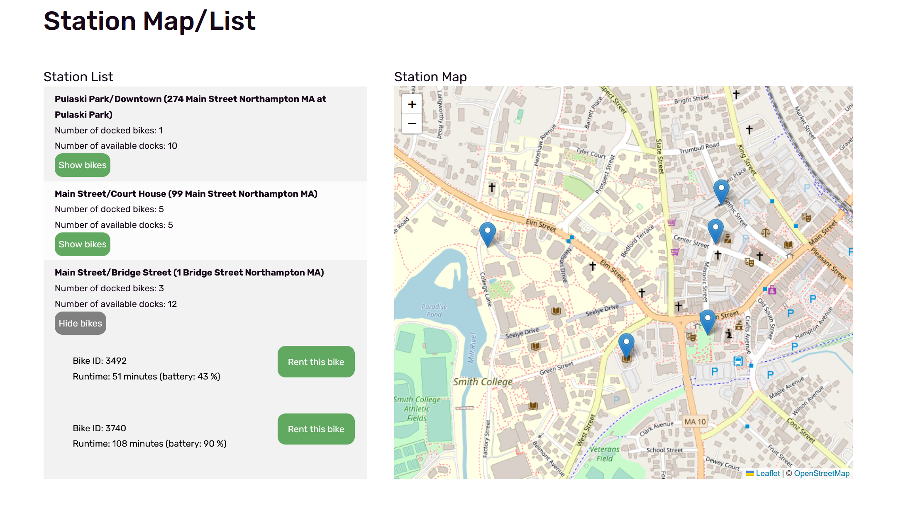
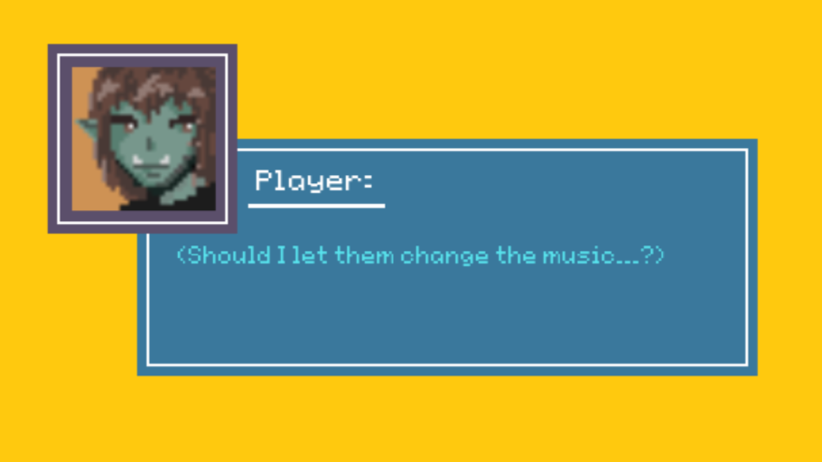

Asher Uman

Software Engineer
&& Game Developer
<_Projects_____>
Aliens Want Our Mascot?!
Producer, Gameplay Programmer (C#, Unity)
A tower defense game developed for MassDigi's Summer Innovation Program. I served as producer and programmer for the entire development process, from ideation and prototyping to shipped title. Free to download on iOS and Android.
Interactive Digital Multimedia
Artist, Programmer (p5.js, Arduino)
My pieces for Interactive Digital Multimedia, an advanced, programming-based art class at Smith College.
ValetBike
Backend Engineer (Ruby on Rails, MySQL)
A web application simulating a bike rental service, built for Intro Software Engineering at Smith College. I designed and programmed the systems and databases for user accounts, balance, rentals, and bikes.
Pygame Visual Novel
Programmer (Python, Pygame)
A framework for creating a text-based game in Pygame. Features I added support for include sound effects, background music, dialogue choices and branching routes, player inventory, and save files.
